Project: Agentic Image Editor (Nuxt 4) · Date: June 18, 2026 · Status: All 4 sprints complete
This records the verification of the Lightroom Cockpit redesign. The previous experience treated an agentic photo edit like a chat transcript: a single spinning "Editing…" badge for progress, step cards stacked below the preview (so comparing frames meant scrolling), and the Stop / branch / use-as-result controls buried behind hover or a collapsed panel. The redesign replaces that with a fixed cockpit — a big sticky live stage that never goes blank, a horizontal filmstrip of every frame, a compact agent rail whose active step is pinned and whose selected row expands inline for reasoning, and a persistent command bar with an always-visible Stop plus interrupt-and-steer. The user always sees the picture, always knows the agent is working, and can branch, stop, or steer without scrolling or hunting. Scope was frontend-only — the agent loop, the /api/edit stream, and the StepEvent contract are untouched.
Sprint 1Cockpit shell + EditorStage
Stand up the fixed cockpit layout and a prominent live stage that replaces the tiny "Editing…" badge with a captioned, animated working state.
What was verified
Typecheck and lint pass; grep -rn setupOpen src/app returns no matches — the old setup-toggle state is fully removed.
During a run the stage stays fixed while frames stream; the working caption shows Step N · {goal} with an indeterminate animated progress bar instead of a static badge.
The stage shows the original during the first "deciding" beat — it is never blank.
On done, the stage shows the result frame with a Download button and a "Result" tag; clicking the stage opens the lightbox on the correct frame, matching the Download URL.
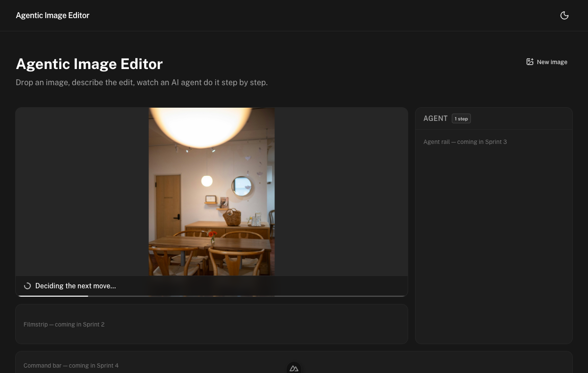
ProvesThe stage is never blank during the first "deciding" beat: the original frame is shown under a "Deciding the next move…" caption with an animated, indeterminate progress bar — replacing the old single spinning badge.
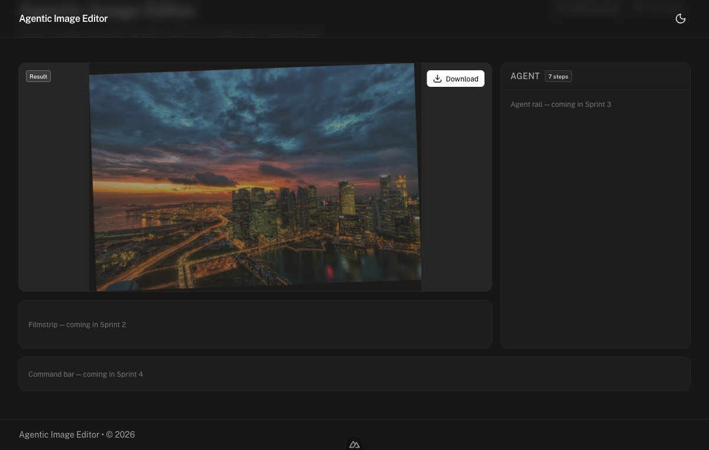
ProvesOn done the stage settles to the result frame with an accessible Download button and a "Result" tag — the download target is surfaced on the stage itself, not buried below a timeline.
Sprint 2Filmstrip
A horizontal strip of every frame so the user navigates the edit history with one glance and one click instead of scrolling — and can branch from any frame.
What was verified
During a run, thumbnails appear left→right (Original → Step 1 → a trailing "…" shimmer tile) and the strip auto-follows the newest frame.
Clicking an earlier thumb pins the stage to that frame, surfaces a "Jump to latest" control, and moves the active ring to the selection; "Jump to latest" clears the pin and snaps back.
The always-visible branch button (i-lucide-git-branch, plus ⌥-click) on an earlier frame sets the branch point via continueFrom → fromStep — branching is not hover-gated.
"Use as result" moves the result flag from one frame to another (Step 2 → Step 1).
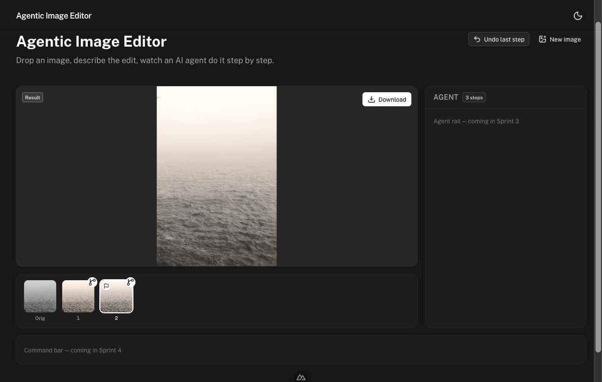
ProvesFrames populate left→right while running, with a trailing "…" shimmer tile standing in for the in-flight step — progress history is visible at a glance.
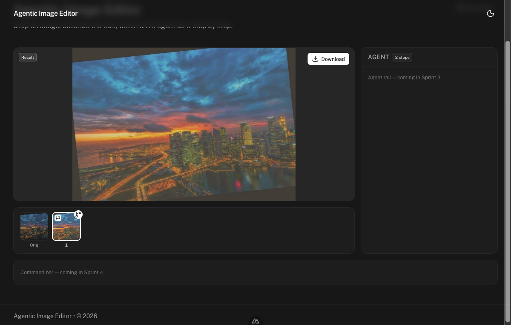
ProvesOn completion the filmstrip holds the full edit history (Original + every applied step) for one-click navigation.
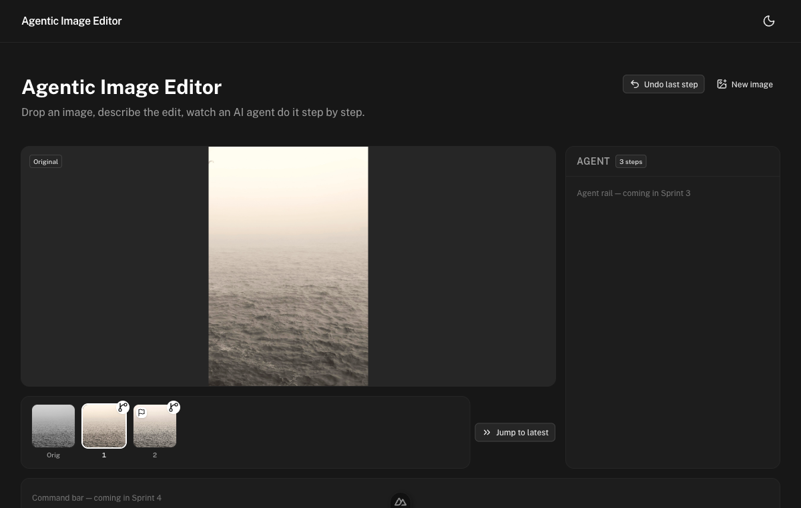
ProvesClicking Step 1 pins the stage to that frame (active ring follows the selection) and surfaces a "Jump to latest" control that re-engages auto-follow.
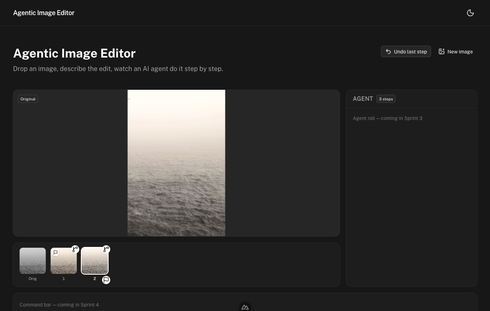
ProvesThe always-visible "use as result" flag moves the download target between frames — here the result flag has been relocated to a different step.
Sprint 3Agent / History rail
Replace the tall vertical timeline cards with a compact, scannable rail where the active step is pinned/emphasized and the selected row expands inline to show full reasoning — with branch/result actions always visible, not hover-gated.
What was verified
Typecheck and lint pass; grep -rn TimelineStep src/ is clean — the old card component is deleted and its label helpers moved into utils/stepFormat.ts.
The active (deciding) step is emphasized with a "working…" caption and a primary ring/background.
Selecting a row expands it inline — op chips, assessment, reason, and always-visible Continue-from-here + Use-as-result buttons.
Selecting a rail row drives the stage frame and filmstrip active ring in sync; the buttons fire the index.vue handlers (verified resultStep/fromStep set in live component state).
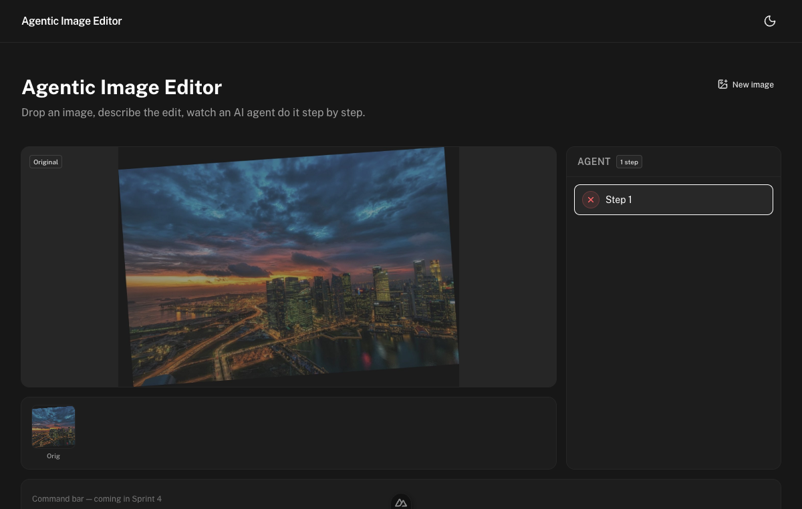
ProvesThe rail renders steps as compact one/two-line rows during a run — a scannable list, not a stack of full-width cards.
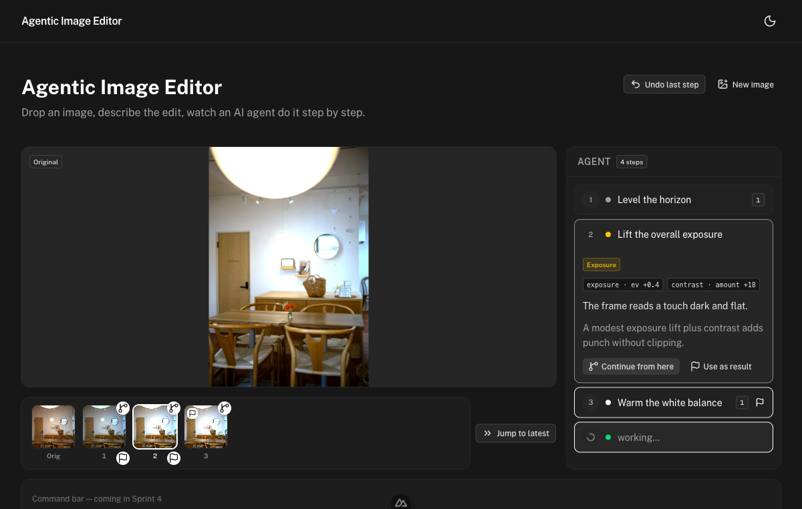
ProvesThe active/deciding step is visually pinned — a "working…" caption plus a primary ring marks where the agent is right now.
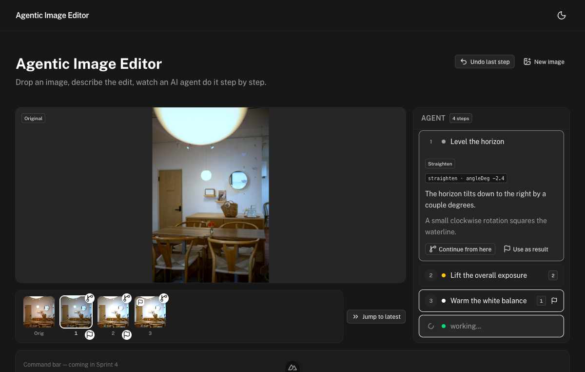
ProvesSelecting a row expands it inline — op chips, assessment, and reason — with the branch and use-as-result buttons always visible rather than hover-gated.ProvesSelection is shared state: choosing a rail row moves the filmstrip active ring and the stage frame together, so the three regions never disagree on what's focused.
Sprint 4Command bar + interrupt-and-steer + responsive polish
A persistent bottom command bar for steering with an always-visible Stop, the ability to interrupt a running edit and steer it from the current frame, and a layout that degrades gracefully on small screens.
What was verified
The command bar (intent textarea + Send + always-visible Stop) is pinned at the bottom on both desktop (1440px) and mobile (390px); Stop is reachable mid-run without scrolling.
On done, Stop is disabled and the button reads "Send"; while running the button reads "Steer" and Send stays enabled.
Interrupt-and-steer (real end-to-end run): a fresh run was interrupted mid-stream with a new instruction; the run halted, settled via a watch-based waitForSettled (not a guessed timeout), then branched from the on-stage frame and appended — final applied steps [1, 2], continued and not reset.
A second send() fired immediately after the first was ignored by the steering re-entrancy guard — no overlapping runs.
The "continuing from Step N · ✕" branch chip renders and the ✕ clears fromStep / focuses the textarea.
On mobile (390px) the in-grid rail is hidden behind a "Steps" toggle that opens a USlideover, while the stage and command bar stay visible; keyboard ←/→ on the focused stage scrub the filmstrip.
Desktop
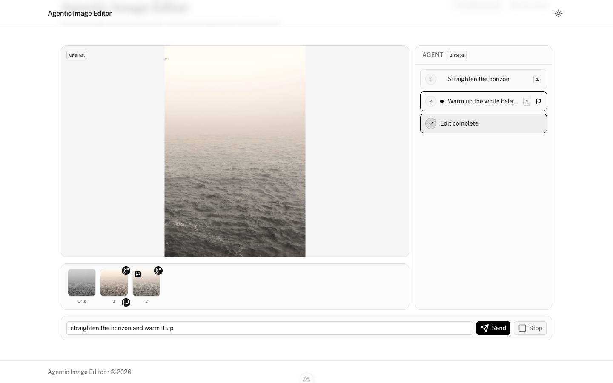
ProvesThe full cockpit on desktop — stage, filmstrip, agent rail, and the command bar pinned at the bottom — all visible at once with no page scroll.
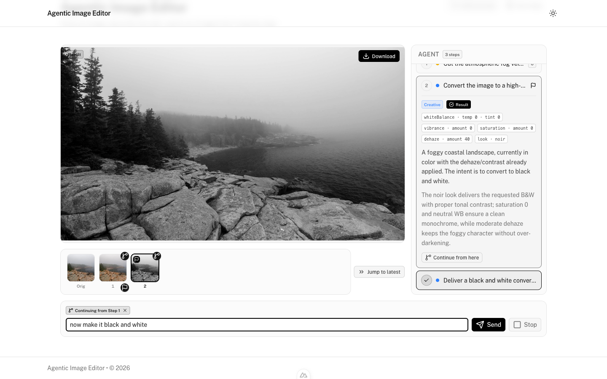
ProvesWhen a branch point is set, the command bar shows a "continuing from Step N · ✕" chip so the branch context is explicit and clearable.
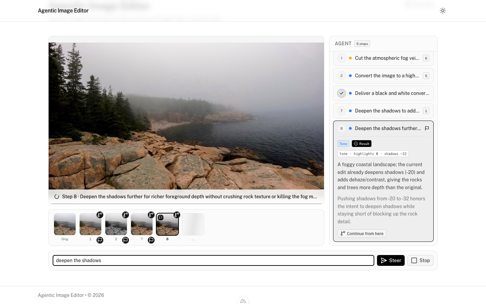
ProvesWhile a run streams, the Send button reads "Steer" and stays enabled — the interrupt-and-steer affordance is legible mid-run, with Stop also always present.
Mobile (390px)
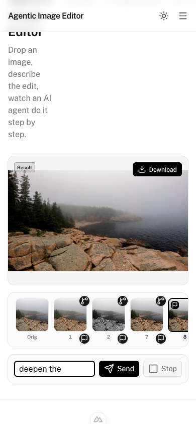
ProvesAt 390px the layout stacks: the rail collapses behind a "Steps" toggle while the stage and command bar stay visible — no wall of panels.
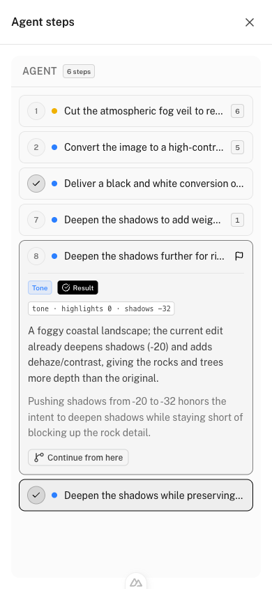
ProvesTapping "Steps" opens a right slideover with the full rail (!flex beating the in-grid hidden), so mobile users still get the complete agent history on demand.
End-to-end golden path
The full intended journey, in order, told through the screenshots that best capture each beat.
Setup → first run begins, stage stays live
The user loads an image and runs an edit. The moment the agent commits to its first step, the stage shows the original under a "Deciding the next move…" caption and an animated progress bar — it never goes blank, and the user immediately knows the agent is working.
Step 1Live stage with the deciding caption and animated bar.
Frames stream into the filmstrip and rail in sync
As the agent applies steps, frames fill the filmstrip left→right with a trailing shimmer tile, and the agent rail lists each step compactly with the active one emphasized. The three regions move together.
Step 2aFilmstrip filling with a trailing shimmer tile.Step 2bRail with the active step pinned and emphasized.
Pin an earlier frame to inspect it
The user clicks Step 1 in the filmstrip. The stage pins to that frame and a "Jump to latest" control appears — but the caption still reflects the active streaming step, so scrubbing back never hides that the agent is still working.
Step 3Pinned to Step 1 with "Jump to latest" surfaced.
Interrupt and steer — new instruction appends, doesn't reset
Mid-stream the user types a new instruction and hits Send (now labelled "Steer"). The live run halts, settles via the watch-based waitForSettled, then branches from the on-stage frame and continues. This was a real end-to-end /api/edit run: frames continued to [1, 2] rather than resetting to [1], and a double-Send was ignored by the steering guard so no two runs overlapped.
Step 4"Steer" affordance live mid-run; the new instruction appends from the current frame.
Done — result on the stage with Download
When the run finishes, the stage settles to the result frame with a "Result" tag and an accessible Download button. A plain follow-up instruction from here continues from the result frame.
Step 5Result frame on the stage with Download.
Mobile — full rail on demand
On a 390px screen the same flow holds: stage and command bar stay visible, and the full agent rail is one "Steps" tap away in a slideover.
Step 6Mobile slideover with the complete agent rail.
The interrupt-and-steer test was a real live run. The steer was fired against the actual /api/edit stream (frames came from the live gateway): on interrupt the applied frames continued to [1, 2] rather than resetting to [1], fromStep was consumed back to null, and an immediate second Send was dropped by the steering re-entrancy guard so no overlapping run could start.
Known caveat worth flagging on review. The AI Gateway was intermittently slow in the test environment, so a few intermediate-state captures (the populated multi-step rail and one desktop baseline) used a client-injected step stream pointed at real on-disk session frames, driving the same steps computed and render path — noted inline in the plan's sprint deviations. The interrupt-and-steer test itself, however, was a genuine end-to-end run against the live /api/edit stream, not an injection.